20251013
1. snap based printer
Connect ipp-usb and avahi:
sudo snap connect ipp-usb:avahi-control avahi:avahi-control
sudo snap connect cups:avahi-control avahi:avahi-control
Possible configuration(manual):
/var/snap/avahi/common/etc/avahi/avahi-daemon.conf)：ini
[server]
host-name=my-computer
domain-name=local
use-ipv4=yes
use-ipv6=no
publish-domain=yes
publish-workstation=yes
publish-a-records=yes
[publish]
disable-publishing=no
Test for printing:
# cups.lp -d Pantum_M6200NW_series_18523C_USB test.txt
request id is Pantum_M6200NW_series_18523C_USB-1 (1 file(s))
2. snap based printer(180406)
Not OK:
$ sudo lsusb | grep 232b
Bus 005 Device 005: ID 232b:8e10
Install snap related software:
sudo snap install ipp-usb cups avahi ipp
Configure:
sudo snap connect ipp-usb:avahi-control avahi:avahi-control
sudo snap connect cups:avahi-control avahi:avahi-control
Test:
sudo cp ./test.txt /var/snap/cups/common/
sudo cups.lp -d Pantum_M6200NW_series_18523C_USB /var/snap/cups/common/test.txt
All items:
root@server1804:/home/test# snap list
Name Version Rev Tracking Publisher Notes
avahi 0.8 587 24/stable ondra✪ -
core22 20250822 2133 latest/stable canonical✓ base
core24 20250829 1196 latest/stable canonical✓ base
cups 2.4.12-2 1112 latest/stable openprinting✓ -
ipp 2023.09 776 latest/stable michaelrsweet -
ipp-usb 0.9.30+git27.257d039 399 latest/stable openprinting✓ -
snapd 2.71 25202 latest/stable canonical✓ s
3. find ipp related:
Use snap’s avahi for browsering.
# avahi.browse -rt _ipp._tcp
+ lo IPv4 Pantum M6200NW series[18523C] (USB) _ipp._tcp local
= lo IPv4 Pantum M6200NW series[18523C] (USB) _ipp._tcp local
hostname = [server1804.local]
address = [127.0.0.1]
port = [60000]
txt = ["air=none" "mopria-certified=2.0" "rp=ipp/print" "priority=50" "kind=document,envelope" "PaperMax=legal-A4" "URF=CP1,IS1,OB10,PQ3-4-5,RS600,W8,V1.4" "UUID=3b7db374-eee4-f7aa-74c1-f15321d92797" "Color=F" "Duplex=F" "note=" "qtotal=1" "usb_MDL=M6200NW series" "usb_MFG=Pantum" "usb_CMD=ACL,CMD,scan,ZJS,PJL" "ty=M6200NW series" "product=(M6200NW series)" "pdl=image/urf,application/octet-stream,image/pwg-raster" "txtvers=1" "adminurl=http://localhost:60000/index.html?tab=airprint" "Fax=F" "Scan=T" "usb_SER=CG9A090672" "usb_HWID=232b&8e10"]
4. ubuntu1804desk related
Add manually:
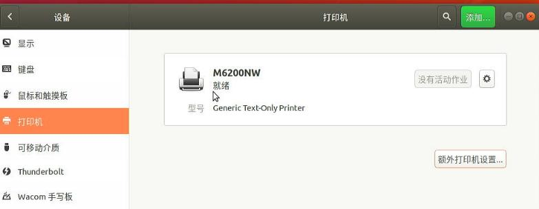
Print:
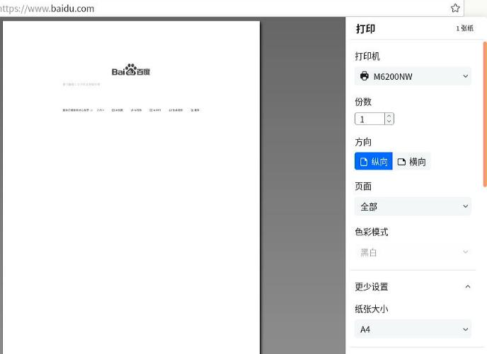
no actions.
print via command line:
root@ubuntu1804desk:/home/test# lpstat -p -d
打印机 M6200NW 目前空闲。从 2025年10月13日 星期一 19时26分44秒 开始启用
无系统默认目标
root@ubuntu1804desk:/home/test#
root@ubuntu1804desk:/home/test# lp -d M6200NW test.txt
请求 ID 为 M6200NW-1（1 个文件）
root@ubuntu1804desk:/home/test# lpstat -o
View device driver for printer:
root@ubuntu1804desk:/home/test# lpstat -p
打印机 M6200NW 目前空闲。从 2025年10月13日 星期一 19时51分04秒 开始启用
root@ubuntu1804desk:/home/test# lpoptions -p M6200NW
copies=1 device-uri=usb://Pantum/M6200NW%20series?serial=CG9A090672 finishings=3 job-cancel-after=10800 job-hold-until=no-hold job-priority=50 job-sheets=none,none marker-change-time=0 number-up=1 printer-commands=none printer-info='Pantum M6200NW series' printer-is-accepting-jobs=true printer-is-shared=true printer-is-temporary=false printer-location printer-make-and-model='Generic Text-Only Printer' printer-state=3 printer-state-change-time=1760356264 printer-state-reasons=none printer-type=12292 printer-uri-supported=ipp://localhost/printers/M6200NW
Ai result:
好的，我们来详细分析这行 lpoptions 命令的输出结果。
根据您提供的 lpoptions -p M6200NW 命令输出，您的打印机 正在使用一个名为 “Generic Text-Only Printer” 的驱动程序。
以下是详细的分析：
核心证据:
在输出信息中，最关键的一行是：
printer-make-and-model='Generic Text-Only Printer'
printer-make-and-model 这个字段直接指明了CUPS（Linux的打印系统）为这台打印机配置的驱动模式。这里的 'Generic Text-Only Printer' 翻译过来就是 “通用纯文本打印机”。
这是什么驱动？:
这并不是一个为奔图M6200NW专门设计的驱动程序。它是一个最基本、最通用的后备驱动，几乎所有Linux发行版都会内置。它的唯一功能就是以最原始的方式发送纯文本字符到打印机。
使用此驱动意味着什么？:
功能极其有限: 您的打印机目前只能正确打印纯文本文件（例如 .txt 文件）。
无法打印图形和格式化文档: 您将无法打印任何包含图片、图表或复杂格式的文档，例如PDF文件、网页、Word文档等。如果尝试打印，结果很可能是打印出一堆乱码、代码或者直接打印失败。
无法使用打印机高级功能: 打印机的所有特定功能，如不同的打印质量、分辨率设置、双面打印等，都无法使用。
配置存在问题:
输出中还有另一条重要信息：
device-uri=usb://Pantum/M6200NW%20series?serial=CG9A090672
这表明系统在硬件层面已经正确识别出这是一台通过USB连接的 “奔图M6200NW系列” 打印机。
结论就是：系统知道它是一台奔图M6200NW，但为其加载的驱动却是“通用纯文本”驱动。这说明打印机在添加或配置时出现了问题，系统未能匹配到正确的驱动程序（例如现代的 "driverless" IPP驱动或奔图专用的PPD驱动），因此退而求其次选择了一个最基础的驱动。
总结：
您当前的打印机配置 不正确，导致其无法作为一台正常的文档打印机使用。您需要重新配置这台打印机，确保为其选择一个正确的驱动程序，例如系统自动推荐的 “driverless” (免驱) 选项或专门为 “Pantum M6200NW series” 设计的驱动，才能发挥其全部功能。
5. lxc related printer
ubuntu180406 host, make 2404 as the lxc instance:
test@ubuntu1804desk:~$ sudo lxc exec desktop2404 bash
root@desktop2404:~# lpinfo -v
network ipps
network socket
network https
network beh
network lpd
network http
direct hp
network ipp
direct hpfax
root@desktop2404:~# lpstat -p -d
printer Pantum_M6200NW_series_18523C_USB is idle. enabled since Mon Oct 13 14:52:34 2025
no system default destination
root@desktop2404:~# vim test.txt
root@desktop2404:~# lp -d Pantum_M6200NW_series_18523C_USB test.txt
request id is Pantum_M6200NW_series_18523C_USB-1 (1 file(s))
Should make some modifications:
vim /usr/lib/systemd/system/ipp-usb.service
disable this service
in one terminal, input following command
# ipp-usb
The other terminal, use lpstat -p -d for viewing the result
6. uos printer
Install via:
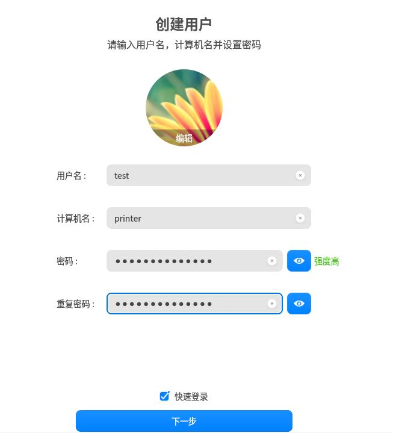
root@printer:~# lsb_release -a
No LSB modules are available.
Distributor ID: Uos
Description: UOS Desktop 20 Professional
Release: 20
Codename: eagle
root@printer:~# cat /etc/os-release
PRETTY_NAME="UOS Desktop 20 Professional"
NAME="uos"
VERSION_ID="20"
VERSION="20"
ID=uos
HOME_URL="https://www.chinauos.com/"
BUG_REPORT_URL="http://bbs.chinauos.com"
VERSION_CODENAME=eagle
root@printer:~# uname -a
Linux printer 4.19.0-amd64-desktop #7206 SMP Thu Nov 28 13:45:35 CST 2024 x86_64 GNU/Linu
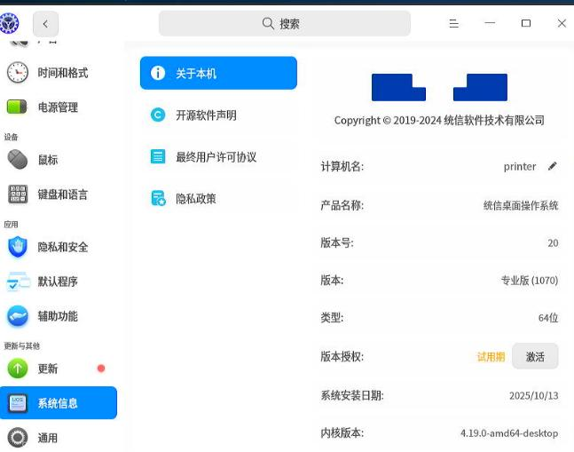
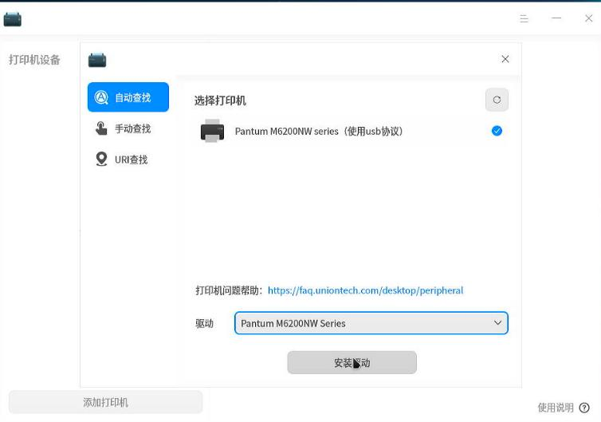
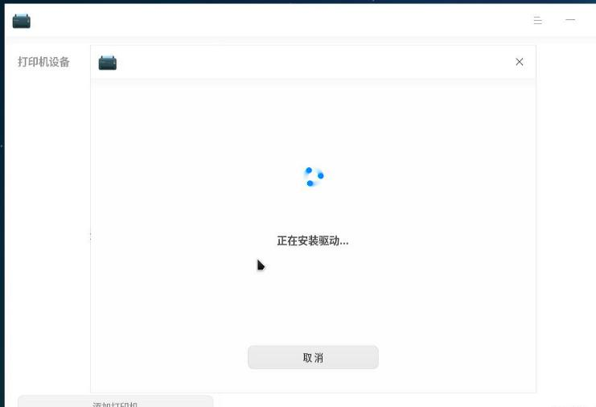
Default pan:
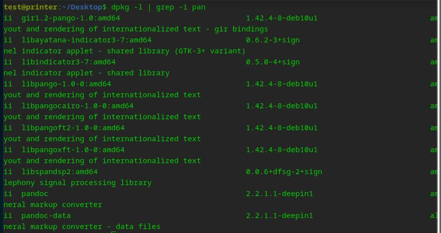
After installed version:
root@printer:~# dpkg -l | grep -i pan
ii gir1.2-pango-1.0:amd64 1.42.4-8~deb10u1 amd64 Layout and rendering of internationalized text - gir bindings
ii libayatana-indicator3-7:amd64 0.6.2-3+sign amd64 panel indicator applet - shared library (GTK-3+ variant)
ii libindicator3-7:amd64 0.5.0-4+sign amd64 panel indicator applet - shared library
ii libpango-1.0-0:amd64 1.42.4-8~deb10u1 amd64 Layout and rendering of internationalized text
ii libpangocairo-1.0-0:amd64 1.42.4-8~deb10u1 amd64 Layout and rendering of internationalized text
ii libpangoft2-1.0-0:amd64 1.42.4-8~deb10u1 amd64 Layout and rendering of internationalized text
ii libpangoxft-1.0-0:amd64 1.42.4-8~deb10u1 amd64 Layout and rendering of internationalized text
ii libspandsp2:amd64 0.0.6+dfsg-2+sign amd64 Telephony signal processing library
ii pandoc 2.2.1.1-deepin1 amd64 general markup converter
ii pandoc-data 2.2.1.1-deepin1 all general markup converter - data files
ii pantum 1.1.129.3-1 amd64 CUPS and SANE drivers for Pantum series printer and scanner.
cups related version:
ii cups 2.4.2.5-deepin1 amd64 Common UNIX Printing System(tm) - PPD/driver support, web interface
ii cups-bsd 2.4.2.5-deepin1 amd64 Common UNIX Printing System(tm) - BSD commands
ii cups-client 2.4.2.5-deepin1 amd64 Common UNIX Printing System(tm) - client programs (SysV)
ii cups-common 2.4.2.5-deepin1 all Common UNIX Printing System(tm) - common files
ii cups-core-drivers 2.4.2.5-deepin1 amd64 Common UNIX Printing System(tm) - driverless printing
ii cups-daemon 2.4.2.5-deepin1 amd64 Common UNIX Printing System(tm) - daemon
ii cups-filters 1.21.6.16-deepin1 amd64 OpenPrinting CUPS Filters - Main Package
ii cups-filters-core-drivers 1.21.6.16-deepin1 amd64 OpenPrinting CUPS Filters - Driverless printing
ii cups-ipp-utils 2.4.2.5-deepin1 amd64 Common UNIX Printing System(tm) - IPP developer/admin utilities
ii cups-ppdc 2.4.2.5-deepin1 amd64 Common UNIX Printing System(tm) - PPD manipulation utilities
ii cups-server-common 2.4.2.5-deepin1 all Common UNIX Printing System(tm) - server common files
ii libcups2:amd64 2.4.2.5-deepin1 amd64 Common UNIX Printing System(tm) - Core library
ii libcupsfilters1:amd64 1.21.6.16-deepin1 amd64 OpenPrinting CUPS Filters - Shared library
ii libcupsimage2:amd64 2.4.2.5-deepin1 amd64 Common UNIX Printing System(tm) - Raster image library
ii libfontembed1:amd64 1.21.6.16-deepin1 amd64 OpenPrinting CUPS Filters - Font Embed Shared library
ii pantum 1.1.129.3-1 amd64 CUPS and SANE drivers for Pantum series printer and scanner.
ii printer-driver-gutenprint 5.3.3.2-deepin1 amd64 printer drivers for CUPS
ii printer-driver-hpcups 3.18.12+dfsg0-2+sign amd64 HP Linux Printing and Imaging - CUPS Raster driver (hpcups)
ii python3-cups 1.9.73.1-1+deepin amd64 Python3 bindings for CUPS
ii python3-cupshelpers 1.5.11.3-1+deepin all Python utility modules around the CUPS printing system
root@printer:~# dpkg -l | grep ipp
ii cups-ipp-utils 2.4.2.5-deepin1 amd64 Common UNIX Printing System(tm) - IPP developer/admin utilities
ii dh-strip-nondeterminism 1.1.2-1+sign all file non-deterministic information stripper — Debhelper add-on
ii ippusbxd 1.33-1 amd64 Daemon for IPP USB printer support
ii libfile-stripnondeterminism-perl 1.1.2-1+sign all file non-deterministic information stripper — Perl module
7. kylinv11 printer
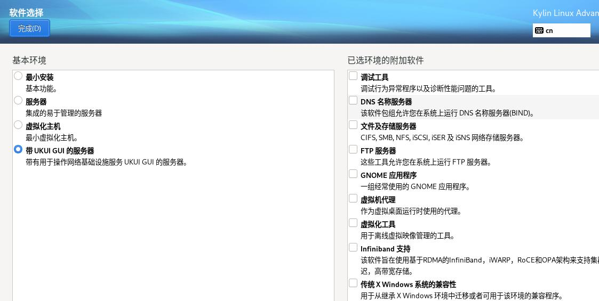
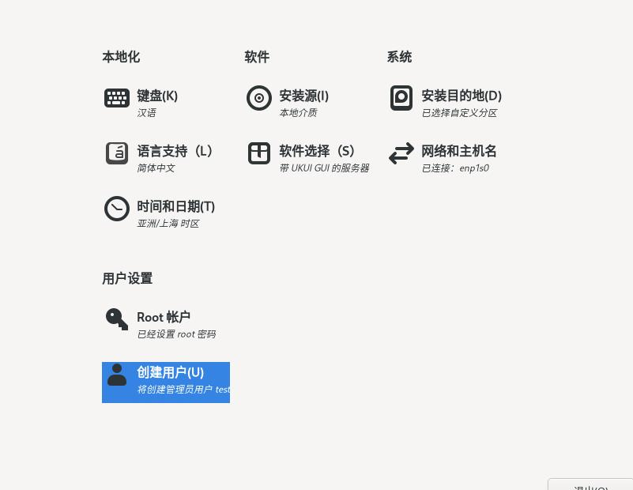
no apt, just use yum.
银河麒麟系统V11安装过程V10无差别。各类工具的版本变高了，如gcc编译，已经到12版本了，但我工作中还使用4.8.5版本，限于时间，兼容性方面暂未进行测试，也未深入使用。
另外，官方发布V11版本至今已有1个月，但官网未提供桌面版本镜像下载，经笔者探索，发现网友在某度网盘上共享有，看文件名应是测试版本，镜像文件体积有8GB多，考虑到下载速度问题（官方下载速度10MB/s，网盘约100KB/s），再考虑到电脑硬盘容量问题，当前就不再下载安装体验了。
8.kylinv10 printer
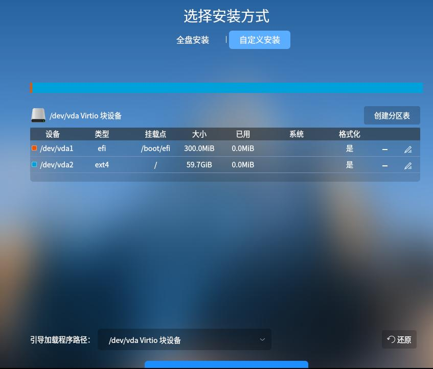
root@kylinv10:~# uname -a
Linux kylinv10 5.4.18-142-generic #131-KYLINOS SMP Thu Mar 27 03:10:31 UTC 2025 x86_64 x86_64 x86_64 GNU/Linux
root@kylinv10:~# cat /etc/issue
Kylin V10 SP1 \n \l
root@kylinv10:~# lsb_release -a
No LSB modules are available.
Distributor ID: Kylin
Description: Kylin V10 SP1
Release: v10
Codename: kylin
root@kylinv10:~# dpkg -l | grep cups
ii bluez-cups 5.62-0kylin3k2.15 amd64 Bluetooth printer driver for CUPS
ii cups 2.3.1-9kylin1.2k8.9 amd64 Common UNIX Printing System(tm) - PPD/driver support, web interface
ii cups-browsed 1.27.4-1kylin5k0.5 amd64 OpenPrinting CUPS Filters - cups-browsed
ii cups-bsd 2.3.1-9kylin1.2k8.9 amd64 Common UNIX Printing System(tm) - BSD commands
ii cups-client 2.3.1-9kylin1.2k8.9 amd64 Common UNIX Printing System(tm) - client programs (SysV)
ii cups-common 2.3.1-9kylin1.2k8.9 all Common UNIX Printing System(tm) - common files
ii cups-core-drivers 2.3.1-9kylin1.2k8.9 amd64 Common UNIX Printing System(tm) - driverless printing
ii cups-daemon 2.3.1-9kylin1.2k8.9 amd64 Common UNIX Printing System(tm) - daemon
ii cups-filters 1.27.4-1kylin5k0.5 amd64 OpenPrinting CUPS Filters - Main Package
ii cups-filters-core-drivers 1.27.4-1kylin5k0.5 amd64 OpenPrinting CUPS Filters - Driverless printing
ii cups-ipp-utils 2.3.1-9kylin1.2k8.9 amd64 Common UNIX Printing System(tm) - IPP developer/admin utilities
ii cups-pk-helper 0.2.6-1kylin3 amd64 PolicyKit helper to configure cups with fine-grained privileges
ii cups-ppdc 2.3.1-9kylin1.2k8.9 amd64 Common UNIX Printing System(tm) - PPD manipulation utilities
ii cups-server-common 2.3.1-9kylin1.2k8.9 all Common UNIX Printing System(tm) - server common files
ii libcups2:amd64 2.3.1-9kylin1.2k8.9 amd64 Common UNIX Printing System(tm) - Core library
ii libcupsfilters1:amd64 1.27.4-1kylin5k0.5 amd64 OpenPrinting CUPS Filters - Shared library
ii libcupsimage2:amd64 2.3.1-9kylin1.2k8.9 amd64 Common UNIX Printing System(tm) - Raster image library
ii printer-driver-cups-pdf 3.0.1-6kylin0k0.1 amd64 printer driver for PDF writing via CUPS
ii printer-driver-hpcups 3.20.3+dfsg0-2kylin0.1 amd64 HP Linux Printing and Imaging - CUPS Raster driver (hpcups)
ii python3-cups 1.9.73-3build1kylin0 amd64 Python3 bindings for CUPS
ii python3-cupshelpers 1.5.12-0kylin27k0.19 all Python utility modules around the CUPS printing system
root@kylinv10:~# lpinfo -v
file cups-pdf:/
serial serial:/dev/ttyS0?baud=115200
network lpd
file cups-brf:/
network ipp
network ipps
network http
direct usb://Pantum/M6200NW%20series?serial=CG9A090672
network https
network beh
network socket
network smb
root@kylinv10:~# lpstat -p -d
lpstat: 未添加目标。
无系统默认目标
root@kylinv10:~# lpstat -t
调度器正在运行
无系统默认目标
lpstat: 未添加目标。
lpstat: 未添加目标。
lpstat: 未添加目标。
lpstat: 未添加目标。
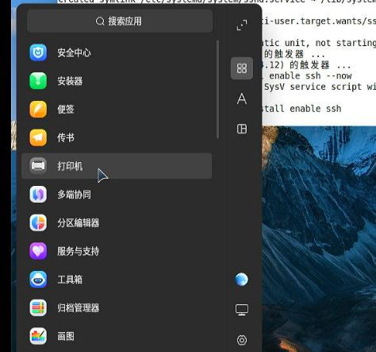
After add:
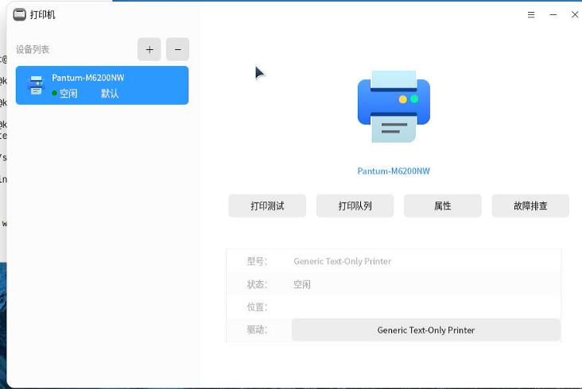
Using the downloaded driver:
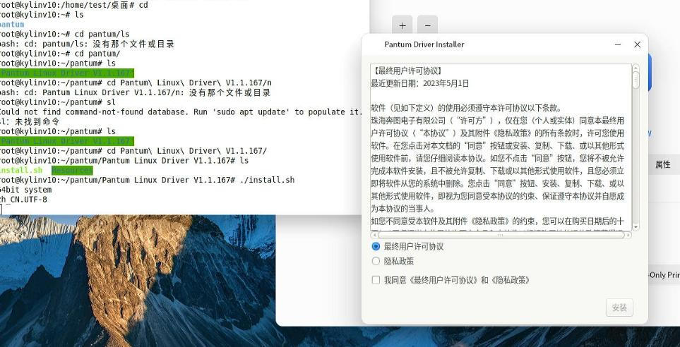
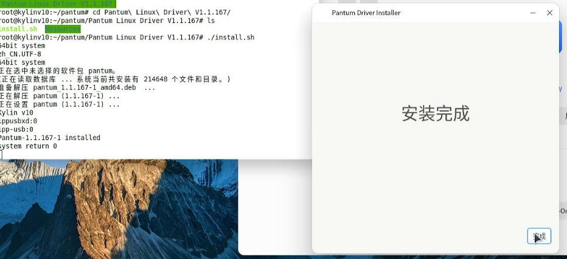
Re-Add the driver:
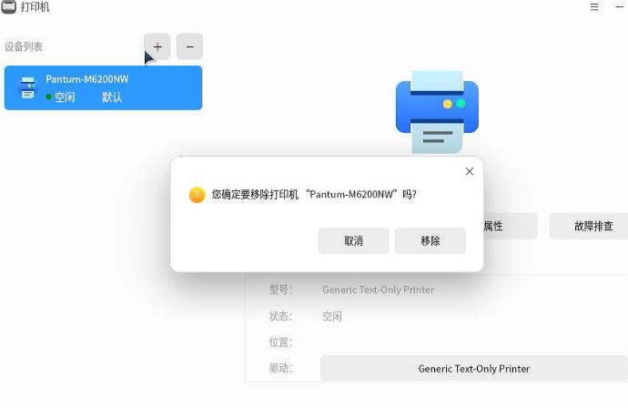
root@kylinv10:~# dpkg -l | grep pantum
ii pantum 1.1.167-1 amd64 CUPS and SANE drivers for Pantum series printer and scanner.
Re-add, still text-only.
REboot the machine, this time we have the correct driver:
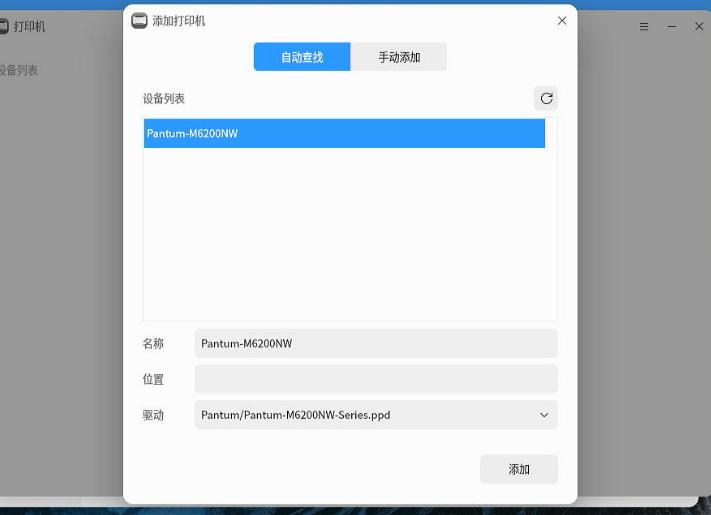
This time ok.
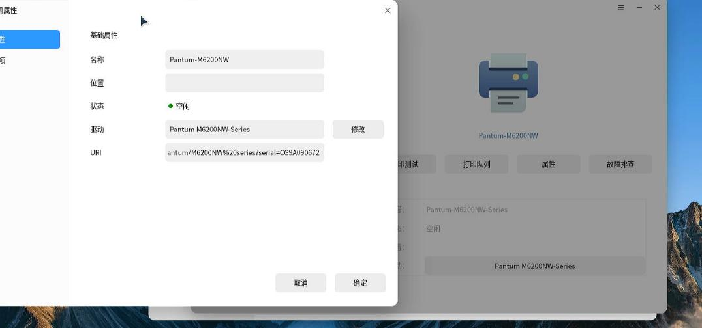
8. zkfd printer
Iso using:
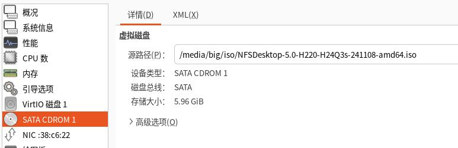
test@test-PC:~$ uname -a
Linux test-PC 6.2.16 #m4+1nfs5.6 SMP PREEMPT_DYNAMIC Fri Nov 1 12:58:14 CST 2024 x86_64 GNU/Linux
test@test-PC:~$ sudo dpkg -l | grep cups
ii bluez-cups 5.55-3.2+m3+1nfs5 amd64 Bluetooth printer driver for CUPS
ii cups 2.3.3op2-4+m3+1nfs5 amd64 Common UNIX Printing System(tm) - PPD/driver support, web interface
ii cups-browsed 1.28.7-1+nfs5 amd64 OpenPrinting CUPS Filters - cups-browsed
ii cups-bsd 2.3.3op2-4+m3+1nfs5 amd64 Common UNIX Printing System(tm) - BSD commands
ii cups-client 2.3.3op2-4+m3+1nfs5 amd64 Common UNIX Printing System(tm) - client programs (SysV)
ii cups-common 2.3.3op2-4+m3+1nfs5 all Common UNIX Printing System(tm) - common files
ii cups-core-drivers 2.3.3op2-4+m3+1nfs5 amd64 Common UNIX Printing System(tm) - driverless printing
ii cups-daemon 2.3.3op2-4+m3+1nfs5 amd64 Common UNIX Printing System(tm) - daemon
ii cups-filters 1.28.7-1+nfs5 amd64 OpenPrinting CUPS Filters - Main Package
ii cups-filters-core-drivers 1.28.7-1+nfs5 amd64 OpenPrinting CUPS Filters - Driverless printing
ii cups-ipp-utils 2.3.3op2-4+m3+1nfs5 amd64 Common UNIX Printing System(tm) - IPP developer/admin utilities
ii cups-pk-helper 0.2.6-1+nfs5 amd64 PolicyKit helper to configure cups with fine-grained privileges
ii cups-ppdc 2.3.3op2-4+m3+1nfs5 amd64 Common UNIX Printing System(tm) - PPD manipulation utilities
ii cups-server-common 2.3.3op2-4+m3+1nfs5 all Common UNIX Printing System(tm) - server common files
ii libcups2:amd64 2.3.3op2-4+m3+1nfs5 amd64 Common UNIX Printing System(tm) - Core library
ii libcupsfilters1:amd64 1.28.7-1+nfs5 amd64 OpenPrinting CUPS Filters - Shared library
ii libcupsimage2:amd64 2.3.3op2-4+m3+1nfs5 amd64 Common UNIX Printing System(tm) - Raster image library
ii printer-driver-hpcups 3.21.12+dfsg0-1 amd64 HP Linux Printing and Imaging - CUPS Raster driver (hpcups)
ii python3-cups:amd64 2.0.1-4+nfs5 amd64 Python3 bindings for CUPS
ii python3-cupshelpers 1.5.14-2+m3+1nfs5 all Python utility modules around the CUPS printing system
root@test-PC:/home/test# lsb_release -a
No LSB modules are available.
Distributor ID: Nfsdesktop
Description: NFSDesktop 5.0-H220
Release: 5.0
Codename: tiger
root@test-PC:/home/test# cat /etc/issue
方德桌面操作系统 5.0-H220 \n \l
Status:
root@test-PC:/home/test# lpinfo -v
network https
network ipp
network beh
network socket
network http
file cups-brf:/
direct hp
network ipps
network lpd
serial serial:/dev/ttyS0?baud=115200
direct usb://Pantum/M6200NW%20series?serial=CG9A090672
network smb
direct hpfax
root@test-PC:/home/test# lpstat -p -d
lpstat: 未添加目标。
无系统默认目标
root@test-PC:/home/test# lpstat -v
lpstat: 未添加目标。
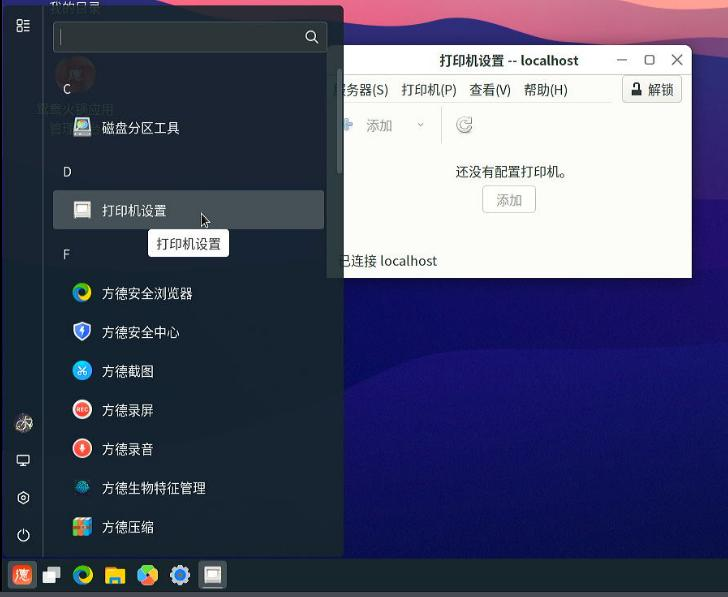
root@test-PC:/home/test# dpkg -l | grep ipp
ii apt-config-icons 0.14.4-1 all APT configuration snippet to enable icon downloads
ii cups-ipp-utils 2.3.3op2-4+m3+1nfs5 amd64 Common UNIX Printing System(tm) - IPP developer/admin utilities
ii dh-strip-nondeterminism 1.12.0-1+nfs5 all file non-deterministic information stripper — Debhelper add-on
ii ipp-usb 0.9.17-3+b4 amd64 Daemon for IPP over USB printer support
ii libfile-stripnondeterminism-perl 1.12.0-1+nfs5 all file non-deterministic information stripper — Perl module
root@test-PC:/home/test# systemctl status ipp-usb
● ipp-usb.service - Daemon for IPP over USB printer support
Loaded: loaded (/lib/systemd/system/ipp-usb.service; static)
Active: active (running) since Mon 2025-10-13 17:39:13 CST; 3min 7s ago
Docs: man:ipp-usb(8)
Main PID: 3243 (ipp-usb)
Tasks: 13 (limit: 15834)
Memory: 6.5M
CPU: 88ms
CGroup: /system.slice/ipp-usb.service
└─3243 /sbin/ipp-usb udev
10月 13 17:39:13 test-PC systemd[1]: Started Daemon for IPP over USB printer support.
root@test-PC:/home/test# ls /var/log/ipp-usb/
232b-8e10-CG9A090672-Pantum-M6200NW-series.log 232b-8e10-CG9A090672-Pantum-M6200NW-series.log.0.gz main.log
root@test-PC:/home/test# lpstat -p -d
打印机 Pantum_M6200NW_series_18523C_USB_ 目前空闲。从 2025年10月13日 星期一 17时42分37秒 开始启用
无系统默认目标
root@test-PC:/home/test# lpstat -v
用于 Pantum_M6200NW_series_18523C_USB_ 的设备：implicitclass://Pantum_M6200NW_series_18523C_USB_/
root@test-PC:/home/test# lpinfo -v
network https
network ipp
network socket
network http
network ipps
network beh
file cups-brf:/
direct hp
network lpd
serial serial:/dev/ttyS0?baud=115200
network smb
direct hpfax